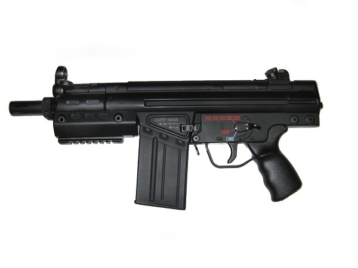
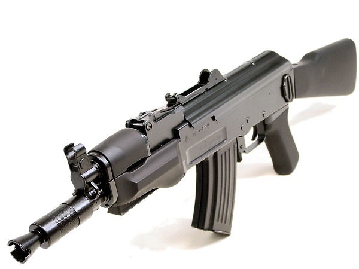
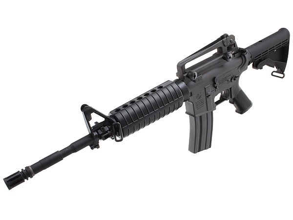
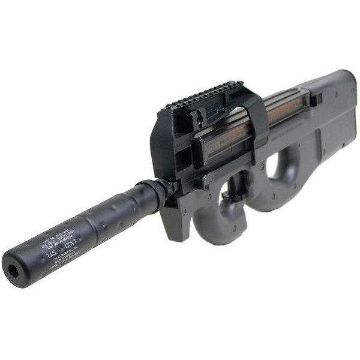
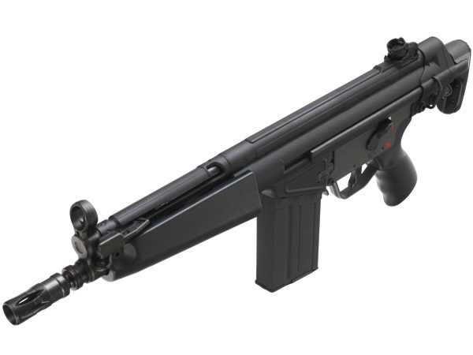
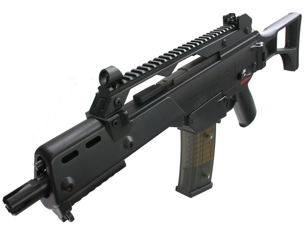
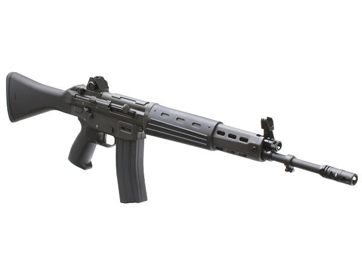
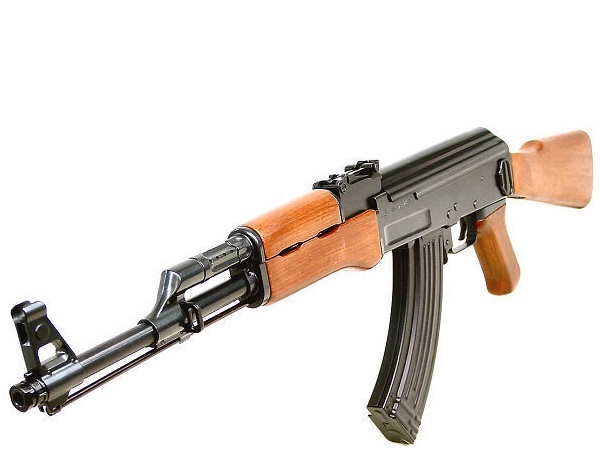

オススメの品
最低限必要なもの
- ゴーグル(1,000 ～ 3,000円)
- エアガン(バッテリー、充電器込)(30,000 ～ 50,000円)フィールドによってはレンタル有。
- バイオＢＢ弾(1,000 ～ 3,000円)
これに長袖・長ズボン・運動靴の運動に適した格好さえあればゲームするだけなら十分。
BB弾なんかフィールドで売ってるし。
特にエアガンはフィールドでレンタルできる場所がほとんど。最初はレンタルがおススメ
…なのだが、どうせならビシッとキメて羨望の的になりたいのが人の性というもの。
そんな欲張りなキミは装備を揃えてみては？
ちょっと凝りたい人向
- 迷彩服・上下(4,000 ～ 12,000円)
- ガンベルト・ピストルベルトとも（1,000 ～ 3,000円）
- グローブ・手袋(1,000 ～ 5,000円)
- タクティカルブーツ・戦闘靴(8,000 ～ 20,000円)
- タクティカルベスト(5,000 ～ 30,000円)
これだけあれば十分、というかかなりガチ勢である。
ただいかんせん高価でもあるので、まずは迷彩服とガンベルトから、というのもアリ。
というか筆者は実際そこからスタートした。そこからその都度欲しくなってきたものを買い足す方がいいかも。
(※尚、上記の価格は全て新品での価格であるので、中古品や譲渡品などはこの限りでない)
「んなこと言ったって具体的に何を買えばいいんだｺﾞﾙｧ!!!」
「よくぞ聞いてくれた」
エアガン(メインアーム)
特に好きな銃、欲しい銃が決まってない人向けに解説。欲しい銃が具体的に決まっている人は価格やメーカー、性能を調べてじっくり考えたり、人に相談したりすれば問題ない。
まずは鉄則。
東京マルイの電動ガン買え。 このメーカーの18歳以上用エアガンはどれも実射性能、耐久性、アフターサポートに優れており、安心して永く使っていける。
初心者の方々には特に「スタンダード電動ガンシリーズ」をオススメする。
このシリーズのエアガンは性能も安定しているし、比較的安価でラインナップも多い。万人にオススメできる。
「次世代電動ガンシリーズ」も予算に余裕があるなら視野に入るが、総じて高価で重いし、マニア向きかも…二挺目以降にどうぞ。
「ハイサイクル電動ガンシリーズ」はバッテリーや弾の消費量は多いが、圧倒的な連射力による火力と制圧力が得られる。お好みで。
架空の、つまり恐らく現実には存在しない銃でいいかどうかでオススメできる銃が分かれ、それでも構わないという人は以下のものがオススメ。
-

G3 SAS
定価：26,800円(税別)
装弾数：500発
-

AK β(ベータ)スペツナヅ
定価：29,800円(税別)
装弾数：250発
標準で多連マガジンがついてくるのも嬉しい。本当に架空の銃というところが気にならないならこの2つ。
G3 SASにはストックは付属していないが、ハイサイクルモデルのG3 SAS HCには伸縮ストックが付属する。
現実の実銃でも存在するモデルがいいという人には以下のモデルを。
-

M4A1
-

P90TR
-

MC51
-

G36C
-

89式小銃
-

AK-47
ちょっと予算に余裕があるのであれば89式小銃もGOOD。やや高価だがスタンダードでは最上の出来。
そのままでは装弾数が数十発と心許ないことが多いので、多連マガジンも一緒に購入しておくことを強くオススメする。
多連マガジンの弾数は銃によって差があるが、おおよそ数百発程度。1ゲーム乗り切るには大体十分。
あとはエアガンごとに対応している形状のバッテリーと充電器を買えばいつでもゲームできる。
バッテリーは取り敢えずニッケル水素バッテリーがオススメ。
ちなみに、チーム所有のエアガンに東京マルイ・MC51を採用している。
迷彩
交戦距離が短いとはいえ、やはり迷彩効果が高い方が相手に発見されにくく、有利。特にこだわりがないのであればリエナクター向きの服は避けて現代戦装備にした方がいい。
持てるエアガンや装備などに大きな制約や不自由が生じる為である。
これらを踏まえてオススメできるのが、以下の5つ。
- 自衛隊迷彩(迷彩服2型or3型)
- マルチカム
- A-TACS
- MARPAT
- フレックタン迷彩
米軍のACU(UCP)も使い勝手はいいが、何せ灰色系の迷彩なので植生環境では目立ってしまうことが多い。
ただし、砂地や枯れた草木、コンクリートの多い環境ではやや有利。冬向きかな…
割とこだわる人には迷彩服と武器の組み合わせも考えて買うことをオススメする。
ブーツ
正直筆者もここらへんは専門外だからそこまで詳しくないんだよなぁ・・・最初のうちはスニーカーなどの運動靴で事足りるが、やはり耐久性や安全性に難があるので徐々に役不足になってくる。
そこで迷彩服などと一緒に是非買い揃えてほしいのがブーツ。 粗悪なコピー品とかは靴自体の耐久度が期待できず、すぐに靴底が剥がれたり、型崩れしてしまったりする。
はきやすさを重視するならサイドジッパーのブーツがいい。
踏み抜き防止や有刺鉄線等の踏みつけ対策の為に、靴底に鉄板や爪先にスチールカップが入っているものもある。
以上を踏まえてオススメなのが以下の品。
S&Graf US.デルタ・アイン
U.Sデルタブーツ COBRA BALL
5.11 TACTICAL ATAC 6
コブラボールと5.11タクティカルはいずれも2万近い高額商品であるが、品質は素晴らしい。
基本的に正規軍は半長靴、PMCや特殊部隊などはショートブーツやアサルトブーツが好まれる。
BB弾
実はBB弾一つ取っても素材のみならず、メーカーによって・直径(外径精度)
・表面処理(研磨)
・潤滑剤(ワックス)
・樹脂密度(重心)
などに結構差が出てくる。何気なく使っているが、実は結構重要な性能ファクターなのだ。
SⅡS
G&G
辺りがオススメ。
トランシーバー(無線機)
作戦行動中に無線でコンタクト、連携を取る兵士。作戦もスムーズになるし、何よりカッコいいよなぁ！！！一応、サバゲーでも市販のトランシーバーを使ってその再現はできます。
専らサバゲーで使われるのは免許不要で飛距離も十分な「特定小電力」(通称: 特小)と呼ばれる種類のトランシーバー。
大きく分けて9ch機と11ch機と20ch機があるが、早い話どれとも通信できる20ch機を買えば問題ない。
アイコム、ケンウッド、アルインコ(アリンコじゃねぇぞ！)というメーカーの製品が人気。
ICOM IC-4088
KENWOOD UBZ-LM20
ALINCO DJ-PA20
この辺りだろうか。これにヘッドセットとかを付けて使う。社外のヘッドセットの豊富さではアイコムとケンウッドに軍配。
ちなみに外部マイク・モノラル端子形状はアイコム、アルインコが共通形状で、ケンウッドは専用の形状。
それぞれに合わせたコネクターが発売されているので安心するように。
通販やオークションで出回っているものにはあまり品質の良くないものや、日本の電波法に適合しない違法品も混ざっている。
(MIDLAND、MOTOROLA製はほぼ違法品と見た方がいい)
アマチュア無線も資格を持っていても目的外通信にあたるので法的にはグレーゾーン。無難に特小使う方が得策かと。
ウェアラブルカメラ
最近はYouTubeやニコニコ動画でもよく見かけるようになってきたサバゲー撮影動画。一度は「自分も録りたいなぁ」と思った方も多いのでは？そんなあなたにオススメのカメラを。
基本的には「ウェアラブルカメラ」、「アクションカム」と呼ばれる類のカメラを使う。
よくバイクやMTBなどのオンボード、オンメット撮影に使われるタイプで、小型軽量かつ高画質。
アタッチメントを介してエアガンやヘルメットに装着、撮影する。
CONTOUR ROAMシリーズ
GoPro HEROシリーズ
iON AIR PRO、Adventure、CamoCam
SONY HDR-AS15、HDR-AS30V、HDR-AZ1
Panasonic HX-A100、HX-A500、HX-A1H
JVC-KENWOOD ADIXXION GC-XA1、GC-XA2
この辺りだろうか。
マウント方法は各社からヘルメットやヘッドマウント、ハーネスマウントなどのオプションがリリースされているので、各々に合わせて検討して頂きたい。
CONTOURならマウントレールアタッチメントが純正品で発売されている。ガンカメラを考えているならオススメ。
基本的に一日中録画するにはバッテリー、容量ともに拡張する手段が欲しい。予備バッテリーやモバイルバッテリー、microSDカードなどでカバーしよう。
あとはレンズの防護策は各々で工夫を。レンズにBB弾が直撃してから泣いても遅い(参考)。
スマートフォンの画面用保護シールを貼ったり、メーカー純正のレンズカバーを付けるといい。
その他、欲しいエアガンや装備があるけどよくわからないという場合は是非気軽に隊員へ！